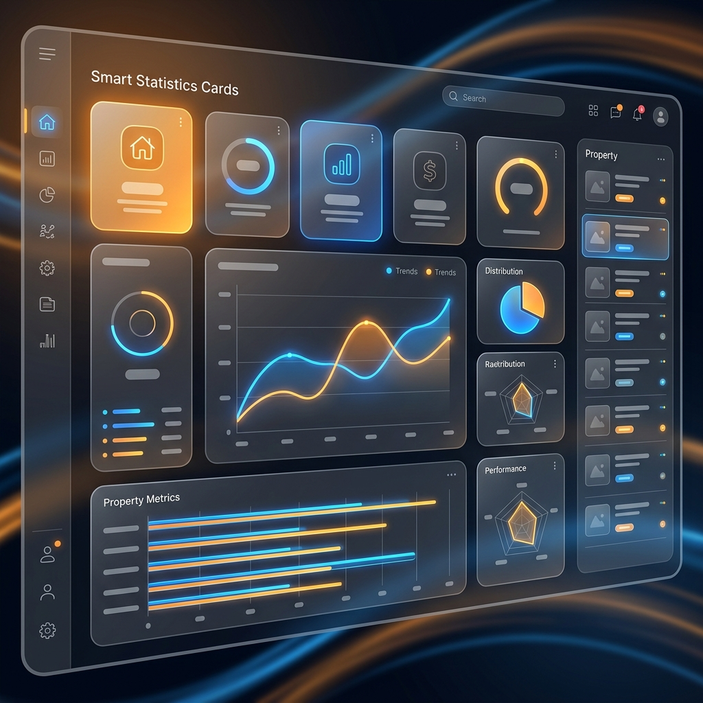

Cargando Módulo...
Cargando descripción detallada del módulo de administración...
Capturas Reales de la App
Visualiza la interfaz real de ConjuntoOS, optimizada tanto para la consola de la administración (escritorio) como para la comodidad de los copropietarios (móviles).

Interfaz Web Administrativa
Acceso rápido a informes, trazabilidad de logs, exportación masiva y configuración global en un entorno seguro en la nube.
Aplicación Móvil Optimizada
Acceso ágil desde smartphones para que los residentes realicen registros, consulten estados, voten en asambleas y reciban alertas push.
Vídeo Explicativo: Demostración en Acción
Observa el flujo transaccional dinámico del módulo en vivo. Haz clic en reproducir para iniciar la guía de demostración simulada.
Iniciando demostración guiada...
Funcionamiento Paso a Paso
Conozca el flujo operativo de ConjuntoOS, diseñado para ser rápido, sencillo e inalterable.
Configuración e Ingreso
El administrador o personal de portería ingresa de manera segura a la interfaz de ConjuntoOS mediante sus credenciales autorizadas.
Operación e Interacción
Se realiza el registro activo en caliente (censo, correspondencia, votaciones o control vehicular) capturando datos o fotos vía webcam.
Resultados y Notificaciones
El sistema procesa los datos en tiempo real mediante sockets, actualiza la base de datos PostgreSQL e informa mediante alertas push y PDFs automáticos.
¿Cómo mejora la Gestión de su Propiedad?
Comparemos las dificultades operativas de los métodos tradicionales frente a la inmediatez y orden que proporciona ConjuntoOS.
| Proceso Operativo | Administración Tradicional | Administración con ConjuntoOS |
|---|---|---|
| Control de Registros | Libros físicos Lentos, propensos a pérdida de información y difíciles de auditar. | Base de datos en nube Registro inalterable indexado y auditable al instante. |
Preguntas Frecuentes del Módulo
Resolvemos sus dudas técnicas y operativas sobre el funcionamiento de esta herramienta.